S54 — Tumhara Brain Memories Kaise Store Karta Hai?
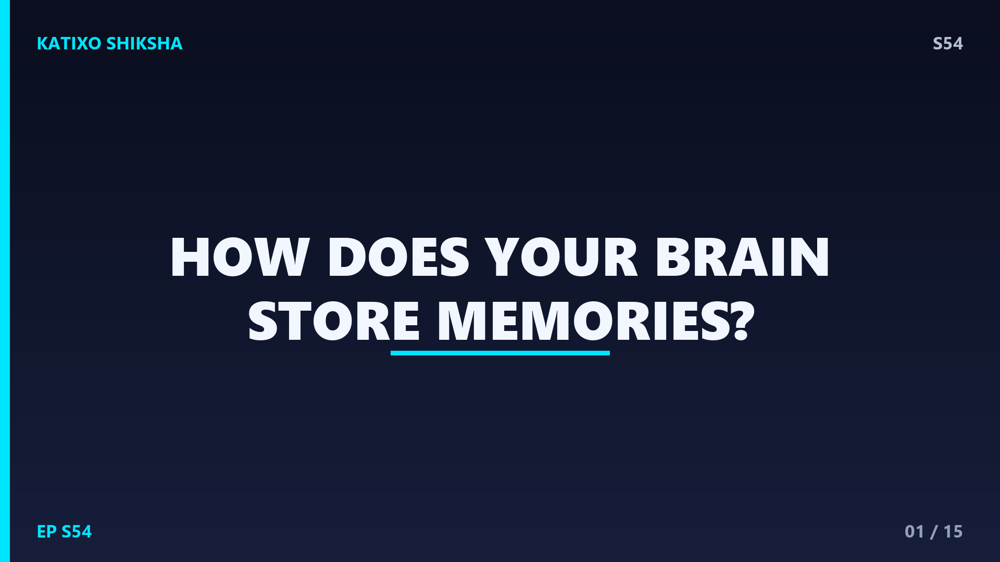
Slide 1दोस्तों, सोचो — तुम अपने bicycle चलाना कैसे याद रखते हो? या अपने best friend का नाम? तुम्हारा brain ये सब memories कहाँ रखता है? क्या दिमाग के अंदर कोई hard drive है जहाँ files save होती हैं? आज Katixo KhojLab पर हम इसी रहस्य को खोलेंगे। मैं तुम्हें बताऊँगा कि कैसे तुम्हारे सिर के अंदर लगभग 86 billion neurons मिलकर हर memory को बनाते हैं। ये कहानी science fiction से भी ज़्यादा amazing है। तो चलो, अपने brain के अंदर एक मज़ेदार सफर पर निकलते हैं!
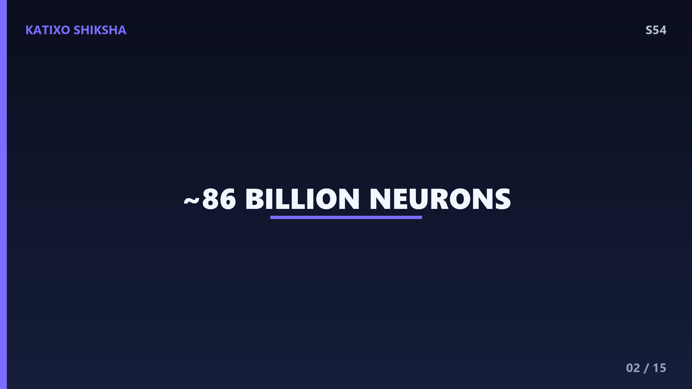
Slide 2सबसे पहले समझते हैं कि memory का असली घर कहाँ है। तुम्हारे brain में लगभग 86 billion neurons होते हैं — ये बहुत छोटी-छोटी nerve cells हैं जो information ले जाती हैं। हर एक neuron एक छोटे tree जैसा दिखता है जिसकी branches दूसरे neurons तक पहुँचती हैं। अकेला neuron कुछ खास नहीं कर सकता, लेकिन जब करोड़ों neurons एक साथ जुड़ते हैं, तब magic होता है। समझ लो ये एक विशाल city की तरह है, जहाँ हर neuron एक घर है और उनके बीच की सड़कें ही memories बनाती हैं। दिलचस्प है ना दोस्तों?
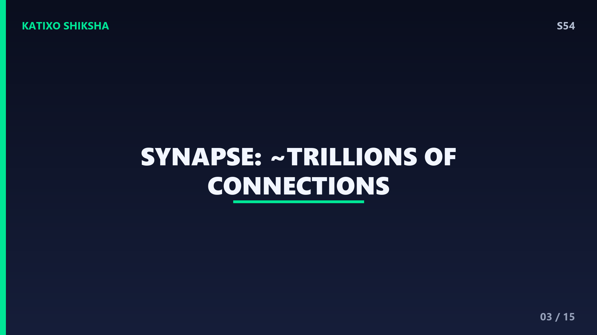
Slide 3अब बड़ा सवाल — ये neurons आपस में बात कैसे करते हैं? दो neurons के बीच एक छोटी सी gap होती है जिसे synapse कहते हैं। तुम्हारे brain में ऐसे trillions of connections यानी खरबों synapses हैं! जब एक neuron message भेजना चाहता है, तो वो एक electrical signal दौड़ाता है। फिर synapse पर ये signal chemical messengers में बदल जाता है जिन्हें neurotransmitters कहते हैं। ये chemicals उस gap को पार करके अगले neuron तक पहुँचते हैं। यानी हर सोच, हर याद — असल में electrical और chemical signals का एक तेज़ dance है दोस्तों।
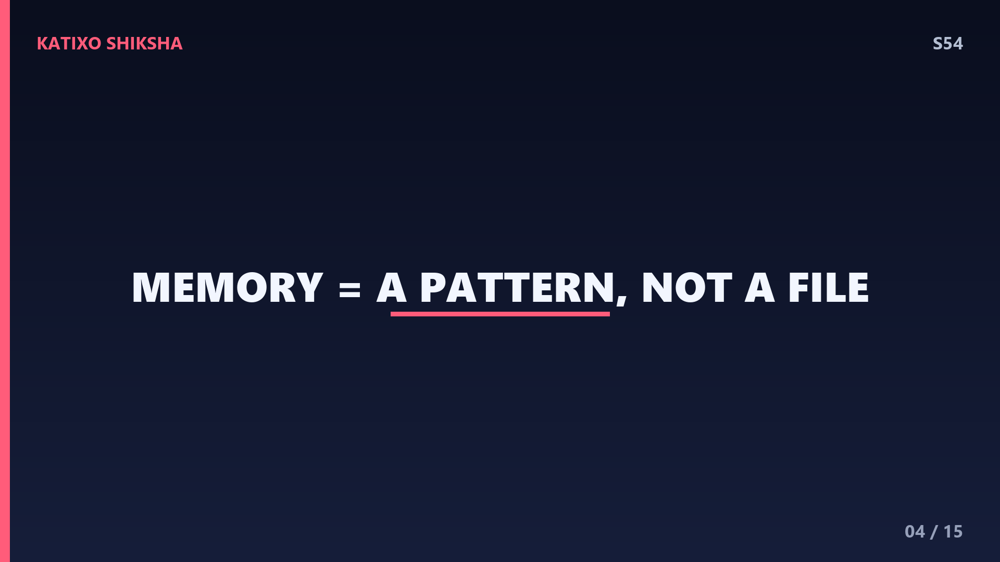
Slide 4अब सबसे important बात जो ज़्यादातर लोग गलत समझते हैं। तुम्हारी memory किसी एक जगह file की तरह store नहीं होती! ऐसा नहीं है कि तुम्हारी birthday की याद दिमाग के एक corner में पड़ी है। असल में, हर memory एक pattern होती है — कई neurons के बीच connections का एक खास नक्शा। जब तुम कुछ याद करते हो, तो वही neurons एक साथ फिर से fire करते हैं और वो pattern दोबारा बन जाता है। इसलिए एक memory पूरे brain में फैली होती है। इसीलिए तो हमारी memory इतनी flexible और powerful है, दोस्तों।
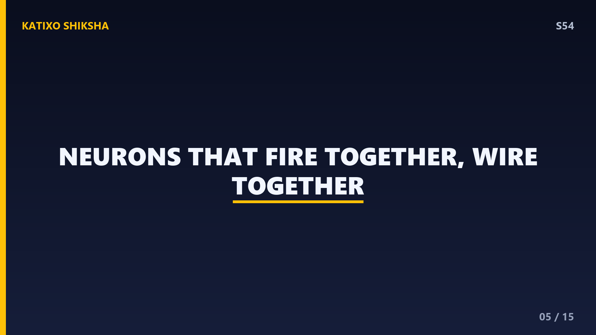
Slide 5अब समझो कि memory कैसे मज़बूत बनती है। एक famous rule है — neurons that fire together, wire together. इसे Hebbian learning कहते हैं, scientist Donald Hebb के नाम पर। मतलब जब दो neurons बार-बार एक साथ active होते हैं, तो उनके बीच का connection हर बार थोड़ा और strong होता जाता है। सोचो जैसे जंगल में एक रास्ता — जितनी बार तुम उस पर चलोगे, वो रास्ता उतना ही साफ और चौड़ा बनता जाएगा। यही reason है कि जो चीज़ें तुम बार-बार करते हो, वो automatically याद हो जाती हैं दोस्तों।
Slide 6इस strengthening process का एक scientific नाम है — Long-Term Potentiation, यानी LTP. जब तुम किसी synapse को बार-बार activate करते हो, तो वो chemically और physically बदल जाता है। उस synapse पर ज़्यादा receptors बन जाते हैं, और signal पहले से तेज़ और आसानी से pass होने लगता है। यही LTP तुम्हारी learning और memory की असली नींव है। इसलिए जब teacher कहते हैं practice करो, तो वो असल में तुम्हारे brain में LTP trigger करवा रहे हैं! हर revision के साथ तुम्हारे synapses और मज़बूत होते जाते हैं, दोस्तों।
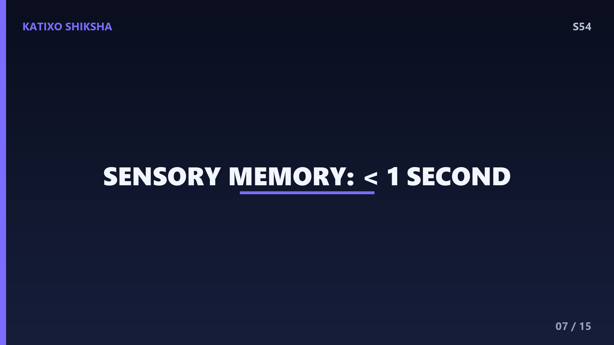
Slide 7अब memory के अलग-अलग types देखते हैं। सबसे पहली है sensory memory — ये बहुत ही short होती है, सिर्फ एक second से भी कम। जैसे जब तुम sparkler को हवा में घुमाते हो तो light की एक lakeer दिखती है, वो sensory memory है। तुम्हारा brain हर पल बहुत सारी information receive करता है, पर ज़्यादातर तुरंत गायब हो जाती है। सिर्फ वही चीज़ें आगे बढ़ती हैं जिन पर तुम ध्यान देते हो। यानी attention ही पहला दरवाज़ा है किसी भी चीज़ को याद रखने का, दोस्तों।
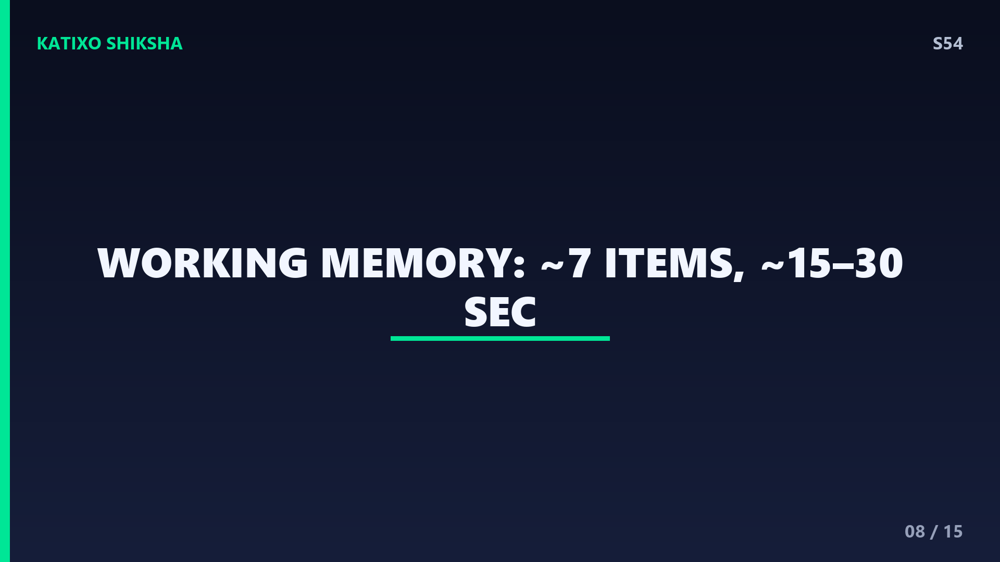
Slide 8अगली है short-term या working memory. ये वो जगह है जहाँ तुम अभी की information कुछ देर के लिए रखते हो — करीब 15 से 30 seconds तक। और interesting बात ये कि इसमें एक साथ सिर्फ लगभग 7 चीज़ें ही रह पाती हैं। इसीलिए phone number याद करना मुश्किल होता है अगर वो बहुत लंबा हो! जब तुम mind में कोई जोड़-घटाव करते हो, तो वही working memory काम कर रही होती है। ये तुम्हारे brain का छोटा सा whiteboard है — जल्दी लिखो, इस्तेमाल करो, और फिर मिट जाता है, दोस्तों।
Slide 9और फिर आती है सबसे powerful — long-term memory. ये वो storage है जो दिनों, सालों, या पूरी ज़िंदगी तक चल सकती है। तुम्हारा नाम, तुम्हारी भाषा, बचपन की यादें — सब यहीं रहती हैं। long-term memory की कोई fixed limit नहीं होती, ये लगभग unlimited है! लेकिन short-term memory अपने आप long-term में नहीं बदलती। इसके लिए brain को एक खास process करनी पड़ती है। और यहीं से entry होती है हमारे brain के एक superstar की, जिसका नाम है hippocampus — चलो उसके बारे में जानते हैं दोस्तों।
Slide 10Hippocampus तुम्हारे brain के अंदर एक छोटा सा घुमावदार हिस्सा है, जिसका shape seahorse जैसा होता है। ये नई long-term memories बनाने का boss है। जब short-term memory को permanent बनाना होता है, तो hippocampus उसे process करके carefully store करता है — इस पूरे process को consolidation कहते हैं। समझ लो hippocampus एक librarian की तरह है जो नई किताबों को सही shelf पर लगाता है ताकि बाद में तुम उन्हें ढूंढ सको। अगर hippocampus damage हो जाए, तो इंसान नई यादें बनाना ही बंद कर देता है। कितना ज़रूरी हिस्सा है ये, दोस्तों!
Slide 11अब एक चौंका देने वाली बात — तुम्हारी memory असल में नींद में भी बनती है! जब तुम सोते हो, तब तुम्हारा brain दिनभर की information को दोबारा play करता है और important memories को मज़बूत करता है। यानी consolidation का बड़ा हिस्सा sleep के दौरान होता है। इसीलिए exam से एक रात पहले पूरी नींद लेना cheating नहीं, बल्कि smart strategy है! जो students अच्छी नींद लेते हैं, वो चीज़ें बेहतर याद रखते हैं। तो दोस्तों, पढ़ाई के साथ-साथ proper sleep को कभी ignore मत करना — ये तुम्हारे brain की secret weapon है।
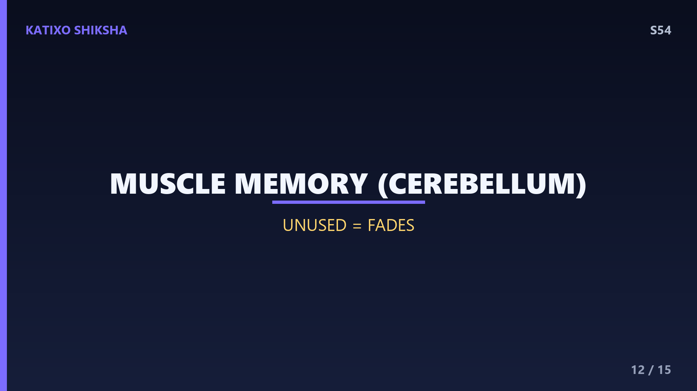
Slide 12अब समझते हैं कि bicycle चलाना या तैरना तुम कभी क्यों नहीं भूलते। ये procedural memory या muscle memory है, और इसे संभालता है brain का एक हिस्सा जिसे cerebellum कहते हैं। ये facts वाली memory से अलग होती है। पहली बार cycle चलाते वक्त तुम गिरते हो, पर हर try के साथ neurons के connections मज़बूत होते जाते हैं, जब तक movement automatic ना हो जाए। और forgetting क्या है? जब कोई connection use ना हो, तो वो धीरे-धीरे कमज़ोर पड़ जाता है। इसीलिए दोस्तों, जो सीखो उसे बार-बार use करते रहो!
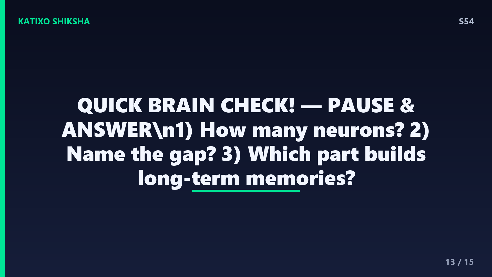
Slide 13Quick brain check! अब देखते हैं तुमने कितना याद रखा। तीन सवाल हैं, और मैं चाहता हूँ कि तुम video को अभी pause करो और सोचकर जवाब दो। पहला — तुम्हारे brain में लगभग कितने neurons होते हैं? दूसरा — दो neurons के बीच की उस gap को क्या कहते हैं जहाँ signals pass होते हैं? और तीसरा — brain का कौन सा हिस्सा नई long-term memories बनाने और consolidation के लिए जाना जाता है? चलो दोस्तों, pause करो, थोड़ा दिमाग लगाओ, और फिर answers के लिए वापस आओ। मुझे यकीन है तुम सब जानते हो!
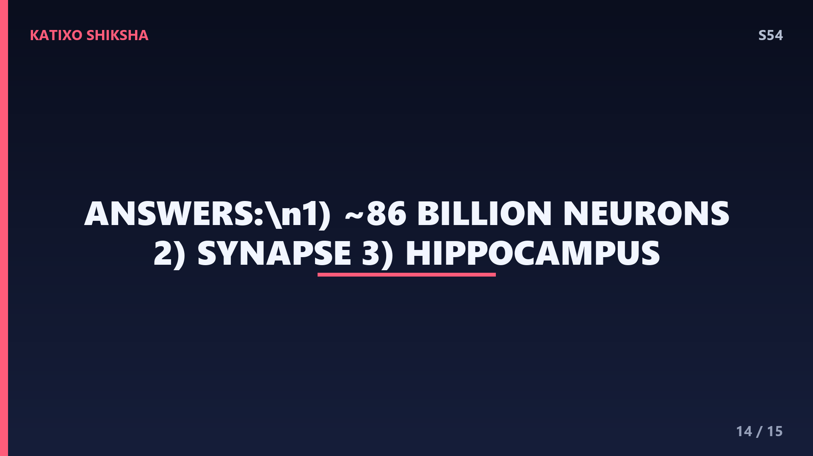
Slide 14तो दोस्तों, चलो answers मिलाते हैं! पहला जवाब — तुम्हारे brain में लगभग 86 billion neurons होते हैं, एक पूरी galaxy जितने! दूसरा जवाब — दो neurons के बीच की gap को synapse कहते हैं, जहाँ neurotransmitters signal pass करते हैं। और तीसरा जवाब — वो खास हिस्सा है hippocampus, जो नई long-term memories बनाता है और consolidation करता है। बताओ, कितने सही हुए? अगर तीनों सही हैं तो शाबाश, तुम्हारी memory कमाल की है! और अगर एकाध miss हुआ, तो कोई बात नहीं — अब वो connection मज़बूत हो चुका है, दोस्तों!
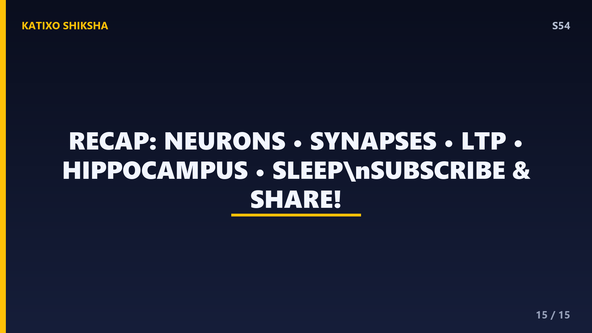
Slide 15तो आज हमने सीखा — memory कोई single file नहीं, बल्कि 86 billion neurons के बीच connections का एक खूबसूरत pattern है। synapses पर signals pass होते हैं, बार-बार practice से LTP connections मज़बूत करता है, hippocampus नई यादें बनाता है, और नींद उन्हें pakka करती है। तो दोस्तों, अच्छे से पढ़ो, बार-बार revise करो, और पूरी नींद लो — यही तुम्हारे brain को superpower देगा। अगर ये episode पसंद आया तो like करो, अपने दोस्तों के साथ share करो, और Subscribe करना मत भूलना! Bye!